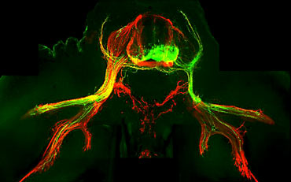

News Archives : 2004 : Thomas Jessell to give Prather Lectures April 21, 22, 23
by Richard Saltus
April 20, 2004
Jessell is professor of biochemistry and molecular biophysics at Columbia and codirector of the newly established Kavli Institute for Brain Science there. He is also a Howard Hughes Medical Institute Investigator.
Trained in England, Jessell did research in the Harvard laboratory of Gerald D. Fischbach (now dean of the faculty of medicine at Columbia) from 1981 to 1985. There he studied the early development of neurons in the spinal cord. After Jessell moved to Columbia in 1985, the Harvard work culminated in the discovery of neuregulins, factors that regulate motor neurons' effects on their synapses with other nerves.
Jessell's main research interests at Columbia are in defining mechanisms that specify the "identity" of neurons, coordinate the pattern of the nerve cells' extensions (axons), and determine their selective synaptic connections to target cells.
|  ES cell derived motor neurons (green) grafted into embryonic spinal cord extend axons into the periphy and innervate muscle targets. Major nerve pathways shown in red. (Image courtesy of Jessel Lab) |
|
The next day, Jessell will speak on "A Deterministic View of Neural Circuit Assembly in the Developing Brain." The question here, he says, is "once the neurons have individual identities, what is necessary to hook them up to form a functional circuit?"
Jessell s third and final talk will be part of an inaugural symposium for the Harvard Stem Cell Institute, designed to explore the complex biological and therapeutic aspects of stem cells and to serve as an educational resource for the Harvard community. The lecture is on "Directing Stem Cell Differentiation: Insights from Neural Development." In Jessell's lab, researchers are introducing genes into embryonic stem cells, or knocking genes out, to help them understand how such a stem cell can become, for example, a motor neuron.
If Jessell and his colleagues can tease out the gene expression patterns that contribute to normal neuron development, there could be vital implications for neurodegenerative disorders and spinal cord injuries. The research "leads to questions in neurodegenerative disorders such as, can you prevent the neuron from dying? Can you replace the missing neurons from (neural) precursors in adults, or generate new neurons?" says Jessell.
"In the last 10 years," he says, summing up the movement in his field, "the advances in understanding the molecular biology of circuit formation have moved from an abstract venture into something that will have clinical impact."
Photo of Dr. Jessel by Chris Denney